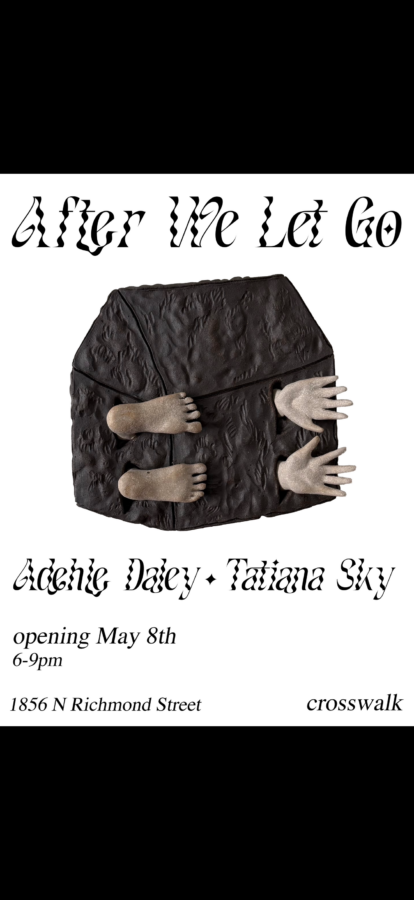

After we let go
crosswalk proudly presents, “After we let go”, a two person show with Adehle Daley & Tatiana Sky.
“After we let go”, opens with a reception on 5.8.26 from 6-9pm at 1856 N Richmond St, Chicago, IL 60647. The exhibition will run through 5.29.26 with a closing reception from 6-9pm, including a performance piece by Adehle Daley & Tatiana Sky.
After we let go, is an exhibit exploring the working relationship between artists Adehle Daley & Tatiana Sky. Sowed in harmony, After we let go, highlights work from both artists individually and showcases a collaborated piece to which encourages the viewer to participate. Together, Daley and Sky explore the intertwining relationship between the natural world and the transcendence of the collective spirit.
Adehle Daley (b.1995) is a ceramicist and painter based in Chicago. Her work explores joy, grief and humor through narrative imagery. The intention of her work is to create a small moment of understanding with the viewer and to offer playful storytelling. Daley holds a BFA in Painting and Drawing from the University of Iowa. Her work has been exhibited at Urbana Cafe and Gallery in NYC, Common Objects in Seattle, and Positive Space in Chicago. Her work was recently shown and sold at Weserhalle’s annual auction and their final auction at the end of the year. In 2025 her work was seen in group shows at Povos, Saw Horse, and Gallery 263.
Tatiana Sky (b.1998) is a sculptor based in Chicago. Focusing on decorative manipulations of landscape, Sky’s sculptures are informed by gardenscapes and cast-metal ornamentation. She received her BFA from the School of the Art Institute of Chicago in 2020 and is currently pursuing her Masters of Fine Arts at the University of Chicago. Tatiana Sky has exhibited her work at Sweet Pass Sculpture Park and Europa, Overlap Gallery among other spaces across the US.